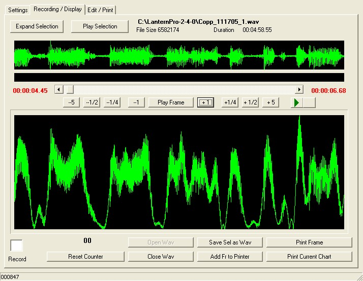

Saddam Hussein refuse de comparaître
Chaotique dès ses débuts, le procès pour crime contre l’humanité de Saddam Hussein et de sept de ses coaccusés à connu un rebondissement mercredi avec le refus du président déchu de se présenter devant ses juges. Le président du Haut tribunal pénal irakien, juridiction mise en place par les Américains, a, avec du retard, ouvert la cinquième audience, estimant que l’ancien homme fort de Bagdad pouvait être jugé par contumace. Un huitième témoin a donc pu comparaître. Le procès a ensuite été ajourné au 21 décembre prochain.
Depuis la reprise lundi du procès de Saddam Hussein, repoussé à deux reprises depuis son ouverture le 19 octobre dernier, incidents de procédure et problèmes techniques se succèdent. Le président déchu, dont deux des avocats ont été tués, comparaît avec sept de ses lieutenants pour le massacre de 148 villageois chiites dans les années 80. Combatif, arrogant, voire véhément, lors des audiences de lundi et mardi, l’ancien homme fort de Bagdad a refusé de se présenter devant ses juges mercredi. Raison invoquée : les conditions matérielles dans lesquelles se déroule le procès. La veille au soir en effet, Saddam Hussein a reproché au président du tribunal, le Kurde Rizkar Amine, d’avoir décidé de tenir une nouvelle audience mercredi alors que les accusés n’avaient plus d’habits propres et ne pouvaient «ni se laver, ni fumer». «Allez au diable», avait-il même lancé au tribunal qui a refusé tout report. |
Lundi, l’audience avait déjà dû être suspendue lorsque les avocats de la défense ont quitté la salle où se déroule, sous très haute sécurité, le procès. Ils protestaient contre le refus du tribunal d’entendre leurs doléances, le président ayant exigé que toute réclamation soit faite par écrit. L’audience a finalement pu reprendre au bout d’une heure et demie lorsque le tribunal a cédé et accepté que deux des avocats le Qatarien Najib Nouaïmi et l’ancien ministre américain de la Justice Ramsey Clark s’expriment. Le premier a ainsi pu aborder la question de la légitimité du Haut tribunal pénal irakien que Saddam Hussein et ses lieutenants contestent depuis le début du procès tandis que le second a largement insisté sur les dangers encourus par la défense. «C’est la fonction du système judiciaire qui est en jeu», a affirmé Ramsey Clark, faisant valoir que les témoins de l’accusation étaient mieux protégés que les avocats qui exercent leur fonction dans la plus grande insécurité.
Premiers témoignages accablants
Malgré ces incidents de procédure, les audiences de cette semaine ont permis aux premiers témoins de s’exprimer sur le massacre en 1982 des 148 villageois chiites de Doujaïl. Le premier, Ahmed Hassan Mohammed –membre connu du parti chiite al-Dawaa– a témoigné lundi a visage découvert. Il a donné les noms de plusieurs de ses voisins qui ont été tués quelques jours après l’attentat manqué contre le convoi de Saddam Hussein. Il a affirmé qu’un couvre-feu avait été instauré à Doujail et que les forces de sécurité ont tiré sur les villageois. «Etiez-vous présent à ce moment-là ?», l’a interrompu avec colère le président déchu. «Bien sûr que j’y étais. Un de mes amis a été torturé. En fait il a été tué devant moi et j’ai été témoin de ce meurtre», a rétorqué Ahmed Hassan Mohammed avant de poursuivre : «D’autres personnes ont été arrêtées et conduites en prison. Et la plupart d’entre elles ont été tuées pendant leur détention». Le deuxième témoin, Djouwaad al-Djouwaad, qui s’est également exprimé à visage découvert, a de son côté raconté l’histoire de son frère de seize ans, arrêté puis exécuté.
Ces premiers témoignages ont, d’entrée de jeu, été récusés par la défense au titre que l’un était «motivé politiquement» –Ahmed Hassan Mohammed a été désigné comme appartenant à un parti «pro-iranien»– tandis que le second ne reposait sur «aucune preuve, ni écrite, ni orale» contre les accusés.
La journée de mardi a, elle, été marquée par le témoignage de deux femmes dont l’identité n’a pas été dévoilée. Elles ont parlé derrière un rideau vert et leur voix a été altérée pour qu’elles ne puissent pas être reconnues. La première –présentée comme le témoin A– avait seize ans au moment du drame. Elle a raconté que son frère et des membres de sa famille avaient été emmenés de force par les hommes de Saddam et a éclaté en sanglots en relatant comment la sécurité du président déchu l’avait obligée à se déshabiller avant de la battre. «J’ai été torturée dans une chambre tapissée de rouge, dont tous les objets étaient rouges. J’ai été suspendue au plafond pieds et poings liés», a-t-elle expliqué. Le témoin B, une femme de soixante-huit ans, a, elle, raconté son arrestation avec son mari et ses sept enfants et détaillé leurs conditions de détention pendant quatre long mois où mauvais traitements et tortures ont constitué leur quotidien. Contrairement à ce qui s’était produit la veille, les deux femmes n’ont à aucun moment été interrompues.
Ces premiers témoignages sont accablants pour les huit accusés qui comparaissent uniquement pour le massacre de Doujail, le premier d’une longue liste de crimes que doit examiner le Haut tribunal pénal irakien. Saddam Hussein et ses lieutenants risquent la peine de mort par pendaison et pourtant ils affichent une indifférence face à ce qui déroule sous leurs yeux. La description des tortures et des exécutions sommaires ne leur arrachent aucun signe de remord. Le président déchu a même affirmé qu’il n’avait pas peur de la mort. Arrogant, il a accusé les témoins d’être «des collaborateurs» au service d’un tribunal dont il ne reconnaît pas la légalité et qu’il accuse d’être au service de l’occupant américain. Et à aucun moment, Saddam Hussein n’a voulu renoncer à se présenter comme le président de l’Irak.
Mounia Daoudi
Article publié le 07/12/2005
Dernière mise à jour le 07/12/2005 à 19:18 (heure de Paris)
Ecoplanning 5.0 Copyright 2005-2006